For this course, I have used one of my very simple tree from a few different organisms within the Archaea superkingdom. More specifically, it is the concatenated ribosomal protein tree within archaea, with representatives from the different Phyla: Asgard archaea (Thorarchaeota, Odinarchaeota, Lokiarchaeota and Heimdallarchaeota), TACK, Euryarchaeota and DPANN. The maximum likelihood phylogeny was reconstructed in IQ-TREE with the LG+F+I+G4 model. The alignment was trimmed to 6,732 positions with the BMGE (Block Mapping and Gathering with Entropy) tool.
ggtree is an R package that extends ggplot2 for visualizating and annotating phylogenetic trees with their covariates and other associated data. ggtree in combination with treeio supports several file formats, including:
read.tree for reading Newick files.read.phylip for reading Phylip files.read.jplace for reading Jplace files.read.nhx for reading NHX files.read.beast for parsing output of BEASTread.codeml for parsing output of CODEML (rst and mlc files)read.codeml_mlc for parsing mlc file (output of CODEML)read.hyphy for parsing output of HYPHYread.jplace for parsing jplace file including output from EPA and pplacerread.nhx for parsing NHX file including output from PHYLODOG and RevBayesread.paml_rst for parsing rst file (output of BASEML and CODEML)read.r8s for parsing output of r8sread.raxml for parsing output of RAxMLlibrary(ggtree)
library(treeio)
arch_tree <- read.newick("data/arch_newick.txt")
arch_treeoutput
##
## Phylogenetic tree with 25 tips and 24 internal nodes.
##
## Tip labels:
## DPANN_Pace_RBG_13_36_9, DPANN_Woese_UBA94, EURY_Thermoplasma_volcanium_GSS1, Eury_Halobaculum_gomorrense, Eury_Methanothermococcus_okinawensis, TACK_Bathy_SMTZ80, ...
## Node labels:
## 100, 10.9, 100, 100, 72, 35.9, ...
##
## Rooted; includes branch lengths.Just like with ggplot2 we created a basic canvas with ggplot(...) and added layers with +geom_???(), we can do the same here. The ggtree package gives us a geom_tree() function. Because ggtree is built on top of ggplot2, you get ggplot2’s default gray theme with white lines. You can override this with a theme from the ggtree package.
Because you’ll almost always want to add a tree geom and remove the default background and axes, the ggtree() function is essentially a shortcut for ggplot(...) + geom_tree() + theme_tree().
ggtree(arch_tree)
#Same as:
#ggplot(arch_tree) + geom_tree() + theme_tree()plot
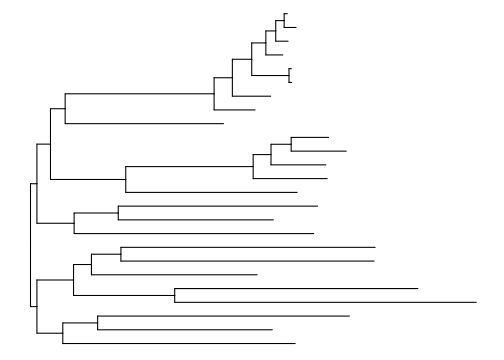
One can also customize how the tree looks like, just as in ggplot
ggtree(arch_tree, branch.length="none", color="blue", size=2, linetype=3)plot
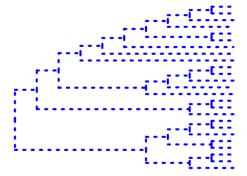
You can also use different orientations to show the tree.
ggtree(arch_tree, color="blue", layout = "circular")plot
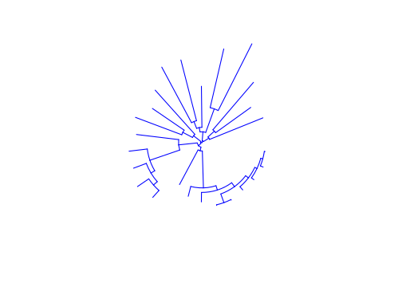
Just like in ggplot() you can add layers to the tree as geoms.
p <- ggtree(arch_tree)
p + geom_tiplab(color = "blue") + theme_tree2()plot
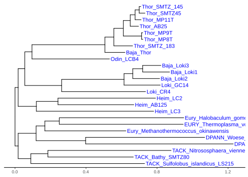
Before we can go further into annotating the tree, we need to understand how ggtree is handling the tree structure internally. Some of the functions in ggtree for annotating clades need a parameter specifying the internal node number. To get the internal node number, user can use geom_text to display it, where the label is an aesthetic mapping to the “node variable” stored inside the tree object (think of this like the continent variable inside the gapminder object).
p + geom_text(aes(label=node), hjust=-.3)plot
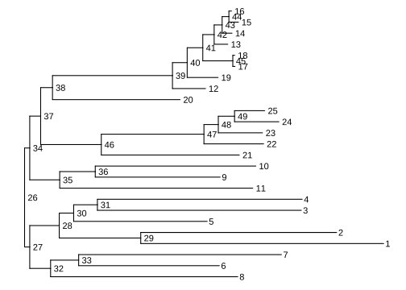
Another way to get the internal node number is using the function MRCA() which stands for Most Recent Common Ancestor. From the tree above, if you would like to get the number of the particular node that is common to all the “Lokiarchaea”. You can do so like below:
MRCA(arch_tree, .node1 = "Baja_Loki3", .node2 = "Loki_CR4")output
## [1] 46Now, let us see how we can use this information to make it scientifically intuitive.
p +
geom_cladelabel(node=46, label="Lokiarchaeota", color="green")plot
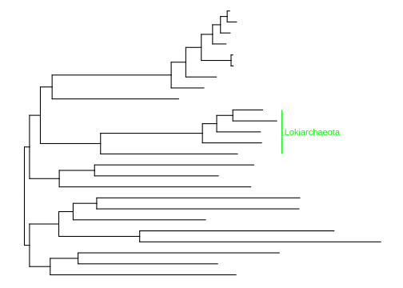
ALternatively, we can also highlight an entire clade:
p +
geom_hilight(node=39, fill = "purple") +
geom_cladelabel(node=39, label="Thorarchaeota", color="purple") +
geom_hilight(node=46, fill = "green") +
geom_cladelabel(node=46, label="Lokiarchaeota", color="green")plot
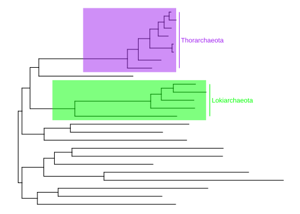
You can make connections to represent processes like gene transfer events on the tree.
p +
geom_hilight(node=30, fill = "orange") +
geom_cladelabel(node=30, label="Euryarchaeota", color="orange") +
geom_hilight(node=46, fill = "green") +
geom_cladelabel(node=46, label="Lokiarchaeota", color="green") +
geom_taxalink("Eury_Methanothermococcus_okinawensis", "Loki_GC14", color = "red")plot
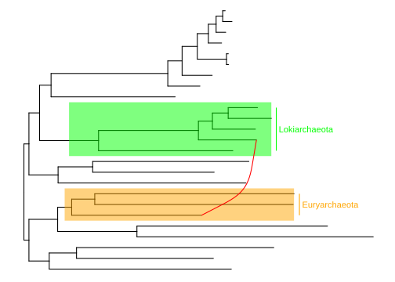
You can group the different tips using the groupOTU function or you can group the tips based on a node using groupClade function. These groups you can then further use it for other geoms and so on.
Let us say, we want to show the Asgrad archaea separately from the other archaea in this tree. One way to this would be:
arch_tree <- groupOTU(arch_tree, c("DPANN_Pace_RBG_13_36_9", "DPANN_Woese_UBA94",
"EURY_Thermoplasma_volcanium_GSS1", "Eury_Halobaculum_gomorrense", "Eury_Methanothermococcus_okinawensis",
"TACK_Bathy_SMTZ80", "TACK_Nitrososphaera_viennensis", "TACK_Sulfolobus_islandicus_LS215"))
ggtree(arch_tree, aes(color=group)) + geom_tiplab()plot
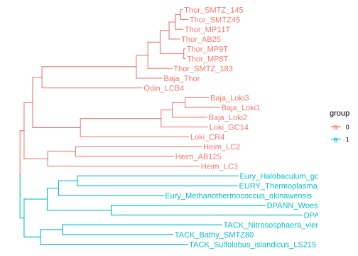
We can also get more detailed:
cls <- list(Heimdallarchaeota = c("Heim_AB125", "Heim_LC2", "Heim_LC3"),
Thorarchaeota = c("Baja_Thor", "Thor_AB25", "Thor_MP11T", "Thor_SMTZ45", "Thor_SMTZ_145", "Thor_MP8T", "Thor_MP9T", "Thor_SMTZ_183"),
Lokiarchaeota = c("Loki_CR4", "Loki_GC14", "Baja_Loki2", "Baja_Loki1", "Baja_Loki3"),
Odinarchaeota = "Odin_LCB4")
arch_tree <- groupOTU(arch_tree, cls)
ggtree(arch_tree) + geom_tiplab(aes(color=group)) +
scale_color_manual(values=c("black", rainbow(4)), labels = c("OutGroup", names(cls)))plot
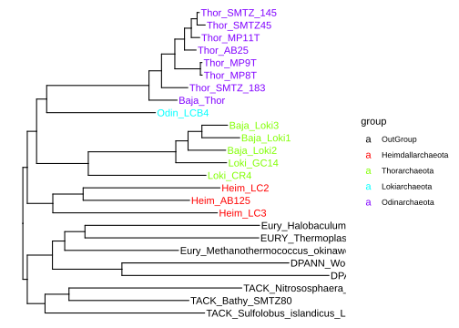
One thing to notice hear that you can group tips from different clades together as well.
baja <- list(Baja = c("Baja_Thor", "Baja_Loki2",
"Baja_Loki1", "Baja_Loki3"))
arch_tree <- groupOTU(arch_tree, baja)
ggtree(arch_tree) + geom_tiplab(aes(color=group)) +
scale_color_manual(values=c("black", "blue"),
labels = c("Public genomes", "Baja genomes"))plot
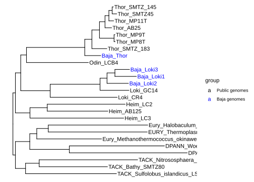
Now, if we are only interested in showing the differences based on the clades, we can use groupClade.
arch_tree <- groupClade(arch_tree, c(39, 46, 35, 27))
ggtree(arch_tree) + geom_tiplab(aes(color=group)) +
scale_color_manual(values=c(rainbow(4), "black"),
labels = c("Odin", "Thor", "Loki", "Heimdall", "OutGroup"))plot
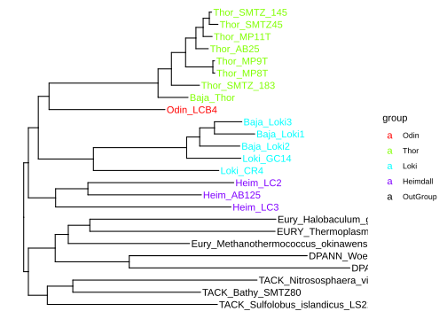
If you notice the tree object, it actually contains node.label that are bootstrap values.
arch_treeoutput
##
## Phylogenetic tree with 25 tips and 24 internal nodes.
##
## Tip labels:
## DPANN_Pace_RBG_13_36_9, DPANN_Woese_UBA94, EURY_Thermoplasma_volcanium_GSS1, Eury_Halobaculum_gomorrense, Eury_Methanothermococcus_okinawensis, TACK_Bathy_SMTZ80, ...
## Node labels:
## 100, 10.9, 100, 100, 72, 35.9, ...
##
## Rooted; includes branch lengths.There are different ways we could show this values on the tree. For example,
ggtree(arch_tree) + geom_nodelab() + geom_tiplab() + theme_tree()plot
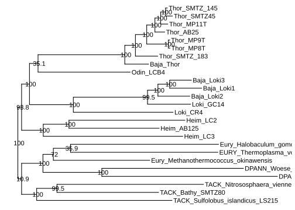
Now, let us say that you only want to show the values that are above 80, then you would have to do some trick here, like:
ggtree(arch_tree) +
geom_nodepoint(aes(subset = as.numeric(label) > 80), size = 3) +
geom_tiplab() +
theme_tree()plot
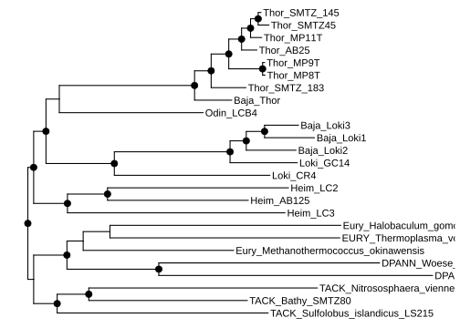
Note Notice that the node.label are in string, so must remember to use as.numeric() option be able to filter them to show them.
Note If the tree does not have bootstrap values with in the treefile, one can add them separately as a data.frame using %<+% function, as shown in the Adding data to tree section below.
It is possible to specific tips from the tree using drop.tip() fuction. Let us say, we want to remove Thor_SMTZ45 and Baja_Loki1, becuase of the reason that their genomes are not close to complete. We can do that by:
to_drop <- c("Thor_SMTZ45", "Baja_Loki1")
arch_tree_reduced <- drop.tip(arch_tree, to_drop)
arch_tree_reduced <- groupClade(arch_tree_reduced, c(37, 43, 33, 25))
ggtree(arch_tree_reduced) + geom_tiplab(aes(color=group)) +
scale_color_manual(values=c(rainbow(4), "black"),
labels = c("Odin", "Thor", "Loki", "Heimdall", "OutGroup"))plot
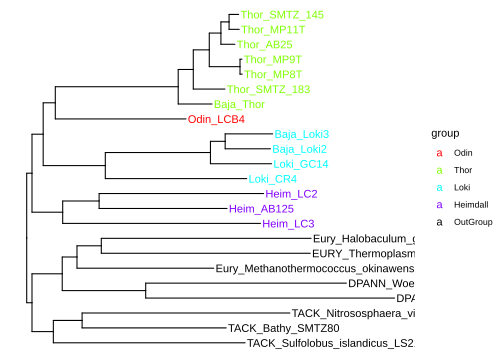
One can also subset a tree, by using the internal node number as shown in the exercises earlier. We can do this by using the tree_subset() function:
asg_tree <- tree_subset(arch_tree, node=34, levels_back=0)
ggtree(asg_tree) + geom_tiplab() plot
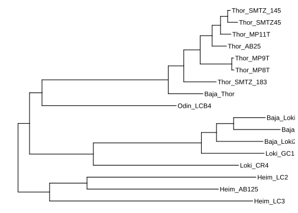
Note The branch lengths and all the other information from the tree are maintained in the new object, when remove tips or subset a tree.
In this part, let us try to see what kind of ways one could add metadata to a tree.
env_info <- read.table("data/tree_env.tsv", sep="\t",
stringsAsFactor=F, row.names = 1, header = T)
p <- ggtree(arch_tree) +
geom_tiplab(aes(color=group)) +
scale_color_manual(values=c(rainbow(4), "black"),
labels = c("Odin", "Thor", "Loki", "Heimdall", "OutGroup")) +
theme(legend.position = "none")
gheatmap(p, env_info, offset = 4, width=1.5,
colnames_angle = 90, colnames_offset_y = 5,
legend_title = "Environment sampled") plot
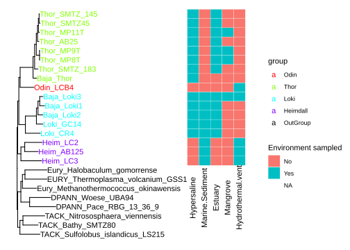
Similarly we can plot a heatmap:
env_hmap <- read.table("data/tree_hmap.tsv", sep="\t",
stringsAsFactor=F, row.names = 1, header = T)
p <- ggtree(arch_tree) +
geom_tiplab(aes(color=group)) +
scale_color_manual(values=c(rainbow(4), "black"),
labels = c("Odin", "Thor", "Loki", "Heimdall", "OutGroup")) +
theme(legend.position = "none")
gheatmap(p, env_hmap, offset = 4, width=1.5,
colnames_angle = 90, colnames_offset_y = 5,
legend_title = "Environment sampled") plot
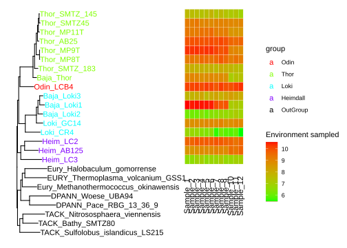
One can use phylopic database, which is part of the ggtree package to use many silhouette images of organisms. Here, we can see how one could add some of those images to a tree.
if (!requireNamespace("ggimage", quietly = TRUE))
install.packages("ggimage", dependencies = TRUE )library(ggimage)
p <- ggtree(arch_tree) +
geom_tiplab(aes(color=group)) +
scale_color_manual(values=c(rainbow(4), "black"),
labels = c("Odin", "Thor", "Loki", "Heimdall", "OutGroup")) +
theme(legend.position = "none")
p + geom_phylopic(size = Inf, image = "e4dde003-8a3b-4c9e-b4ed-1f6e4d894163",
color="steelblue", alpha = .3)plot
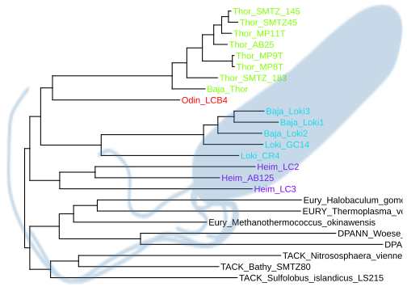
One can add specific images to the specific nodes as well. For this, we would include the phylopic information as a dataframe and which specific node number, should these images be matched. Then we could add this information to the ggtree object using %<+% function.
phylopic_info <- data.frame(node = c(39, 46, 35, 27, 20),
phylopic = c("6b79f4f2-3c34-4130-9e60-4ba2fe68ff48",
"f04e96a5-8c19-4caf-af64-ee51e69431fd",
"e4dde003-8a3b-4c9e-b4ed-1f6e4d894163",
"3cabf30c-eed6-4dc4-824e-f7eac992f554",
"5254d3c6-6865-46c4-beaa-4a9306a50bc8"))
p <- ggtree(arch_tree) +
geom_tiplab(aes(color=group)) +
scale_color_manual(values=c(rainbow(4), "black"),
labels = c("Odin", "Thor", "Loki", "Heimdall", "OutGroup")) +
theme(legend.position = "none")
p %<+% phylopic_info +
geom_nodelab(aes(image=phylopic),
geom="phylopic", alpha=.8, color='steelblue') +
geom_tiplab(aes(image=phylopic),
geom="phylopic", alpha=.8, color='steelblue')plot
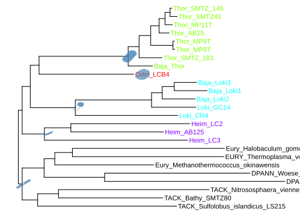
Note Notice that for Odin, we had to use geom_tiplab() as it is a tip and not a node!
There are more fun images in phylopic that one can use:
phylopic_info <- data.frame(node = c(39, 46, 35, 27, 38),
phylopic = c("bac25f49-97a4-4aec-beb6-f542158ebd23",
"f598fb39-facf-43ea-a576-1861304b2fe4",
"aceb287d-84cf-46f1-868c-4797c4ac54a8",
"0174801d-15a6-4668-bfe0-4c421fbe51e8",
"72f2f854-f3cd-4666-887c-35d5c256ab0f"))
p <- ggtree(arch_tree) +
geom_tiplab(aes(color=group)) +
scale_color_manual(values=c(rainbow(4), "black"),
labels = c("Odin", "Thor", "Loki", "Heimdall", "OutGroup")) +
theme(legend.position = "none")
p %<+% phylopic_info +
geom_nodelab(aes(image=phylopic), geom="phylopic",
alpha=.8, color='steelblue') plot
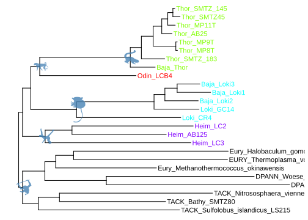
sessionInfo()## R version 4.1.3 (2022-03-10)
## Platform: x86_64-pc-linux-gnu (64-bit)
## Running under: Ubuntu 18.04.6 LTS
##
## Matrix products: default
## BLAS: /usr/lib/x86_64-linux-gnu/openblas/libblas.so.3
## LAPACK: /usr/lib/x86_64-linux-gnu/libopenblasp-r0.2.20.so
##
## locale:
## [1] LC_CTYPE=C.UTF-8 LC_NUMERIC=C LC_TIME=C.UTF-8
## [4] LC_COLLATE=C.UTF-8 LC_MONETARY=C.UTF-8 LC_MESSAGES=C.UTF-8
## [7] LC_PAPER=C.UTF-8 LC_NAME=C LC_ADDRESS=C
## [10] LC_TELEPHONE=C LC_MEASUREMENT=C.UTF-8 LC_IDENTIFICATION=C
##
## attached base packages:
## [1] grid stats graphics grDevices utils datasets methods
## [8] base
##
## other attached packages:
## [1] ggimage_0.3.1 treeio_1.18.1 ggtree_3.2.1
## [4] pheatmap_1.0.12 swemaps_1.0 mapdata_2.3.0
## [7] maps_3.4.0 gridExtra_2.3 jpeg_0.1-9
## [10] ggpubr_0.4.0 cowplot_1.1.1 ggthemes_4.2.4
## [13] scales_1.2.0 ggrepel_0.9.1 wesanderson_0.3.6
## [16] forcats_0.5.1 stringr_1.4.0 purrr_0.3.4
## [19] readr_2.1.2 tidyr_1.2.0 tibble_3.1.6
## [22] tidyverse_1.3.1 reshape2_1.4.4 ggplot2_3.3.5
## [25] formattable_0.2.1 kableExtra_1.3.4 dplyr_1.0.8
## [28] lubridate_1.8.0 leaflet_2.1.1 yaml_2.3.5
## [31] fontawesome_0.2.2.9000 captioner_2.2.3 bookdown_0.26
## [34] knitr_1.39
##
## loaded via a namespace (and not attached):
## [1] colorspace_2.0-3 ggsignif_0.6.3 ellipsis_0.3.2
## [4] fs_1.5.2 aplot_0.1.3 rstudioapi_0.13
## [7] farver_2.1.0 fansi_1.0.3 xml2_1.3.3
## [10] splines_4.1.3 jsonlite_1.8.0 broom_0.8.0
## [13] dbplyr_2.1.1 compiler_4.1.3 httr_1.4.2
## [16] backports_1.4.1 assertthat_0.2.1 Matrix_1.4-0
## [19] fastmap_1.1.0 lazyeval_0.2.2 cli_3.3.0
## [22] leaflet.providers_1.9.0 htmltools_0.5.2 tools_4.1.3
## [25] gtable_0.3.0 glue_1.6.2 Rcpp_1.0.8.3
## [28] carData_3.0-5 cellranger_1.1.0 jquerylib_0.1.4
## [31] vctrs_0.4.1 ape_5.6-2 svglite_2.1.0
## [34] nlme_3.1-155 crosstalk_1.2.0 xfun_0.30
## [37] rvest_1.0.2 lifecycle_1.0.1 rstatix_0.7.0
## [40] hms_1.1.1 parallel_4.1.3 RColorBrewer_1.1-3
## [43] curl_4.3.2 ggfun_0.0.6 yulab.utils_0.0.4
## [46] sass_0.4.1 stringi_1.7.6 highr_0.9
## [49] tidytree_0.3.9 rlang_1.0.2 pkgconfig_2.0.3
## [52] systemfonts_1.0.4 evaluate_0.15 lattice_0.20-45
## [55] patchwork_1.1.1 htmlwidgets_1.5.4 labeling_0.4.2
## [58] tidyselect_1.1.2 plyr_1.8.7 magrittr_2.0.3
## [61] R6_2.5.1 magick_2.7.3 generics_0.1.2
## [64] DBI_1.1.2 pillar_1.7.0 haven_2.5.0
## [67] withr_2.5.0 mgcv_1.8-39 abind_1.4-5
## [70] modelr_0.1.8 crayon_1.5.1 car_3.0-12
## [73] utf8_1.2.2 tzdb_0.3.0 rmarkdown_2.14
## [76] readxl_1.4.0 reprex_2.0.1 digest_0.6.29
## [79] webshot_0.5.3 gridGraphics_0.5-1 munsell_0.5.0
## [82] viridisLite_0.4.0 ggplotify_0.1.0 bslib_0.3.1